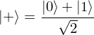
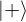
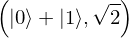
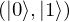

In [1]:
import proveit
# Automation is not needed when only building an expression:
proveit.defaults.automation = False # This will speed things up.
proveit.defaults.inline_pngs = False # Makes files smaller.
# import the special expression
from proveit.physics.quantum._axioms_ import ketPlusDef
In [2]:
# check that the built expression is the same as the stored expression
%check_expr ketPlusDef
In [3]:
# Show the LaTeX representation of the expression for convenience if you need it.
print(ketPlusDef.latex())
In [4]:
# display the expression information
ketPlusDef.exprInfo()
Out[4]:
| core type | sub-expressions | expression | |
|---|---|---|---|
| 0 | Operation | operator: 1 operands: 2 |  |
| 1 | Literal |  | |
| 2 | ExprTuple | 3, 4 |  |
| 3 | Operation | operator: 17 operand: 5 |  |
| 4 | Operation | operator: 18 operands: 6 |  |
| 5 | Literal |  | |
| 6 | ExprTuple | 7, 8 |  |
| 7 | Operation | operator: 9 operands: 10 |  |
| 8 | Operation | operator: 11 operands: 12 |  |
| 9 | Literal |  | |
| 10 | ExprTuple | 13, 14 |  |
| 11 | Literal |  | |
| 12 | ExprTuple | 21, 15 |  |
| 13 | Operation | operator: 17 operand: 16 |  |
| 14 | Operation | operator: 17 operand: 20 |  |
| 15 | Operation | operator: 18 operands: 19 |  |
| 16 | Literal |  | |
| 17 | Literal |  | |
| 18 | Literal |  | |
| 19 | ExprTuple | 20, 21 |  |
| 20 | Literal |  | |
| 21 | Literal |  |